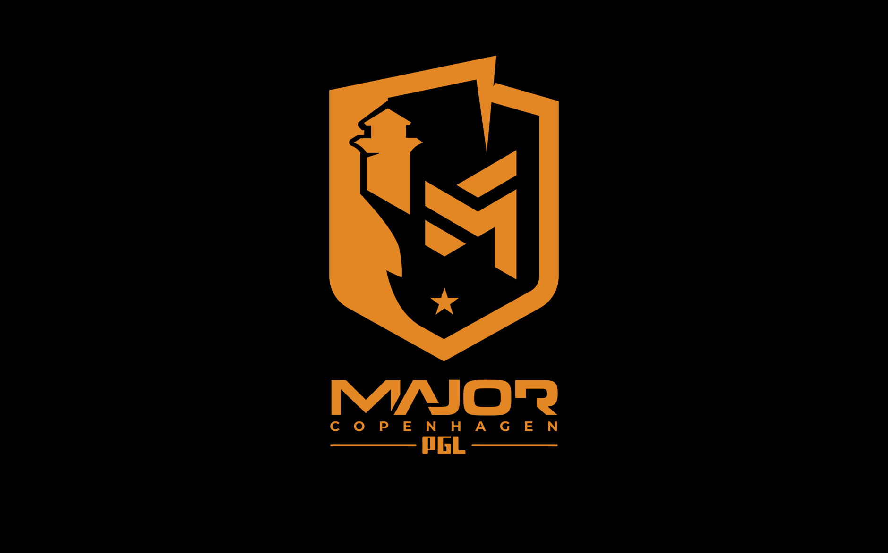
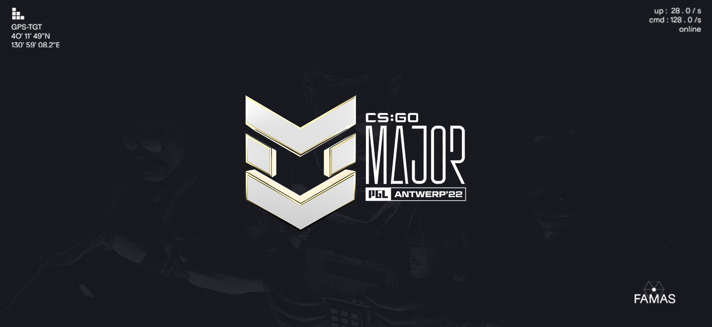
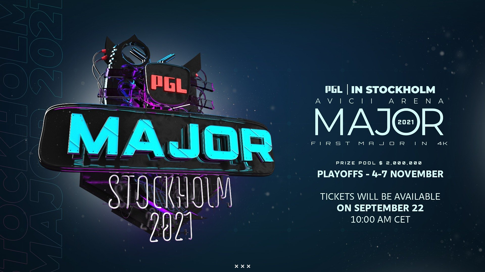
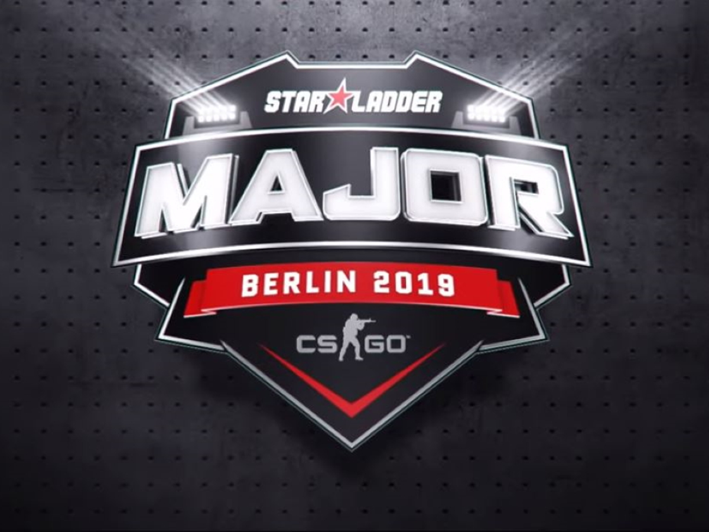

2024 Copenhangen
Ez volt az első CS2-es Major amit a Natus Vincere(NAVI) nyert meg.
2023 Paris
Ez volt az utolsó CS:GO-s Major amit a Vitality nyert meg.

2022 Antwerp
A 2022 Antwerp Major döntőjébe a Faze illetve a Navi jutott, ahol a Faze jobbnak bizonyult, így ők vihették haza a trófeát és az 1 millió dolláros főnyereményt.

2021 Stockholm
A 2021-es Majort a Navi csapata nyerte meg, ez volt s1mple elso Major győzelme.
------
A 2020-as Major amit Rio-ban szerettek volna rendezni, törölve lett a Covid miatt.

2019 Berlin
A 2019-ben megrendezésre kerülő Berlini CS:GO Majort az Astralis nyerte meg.